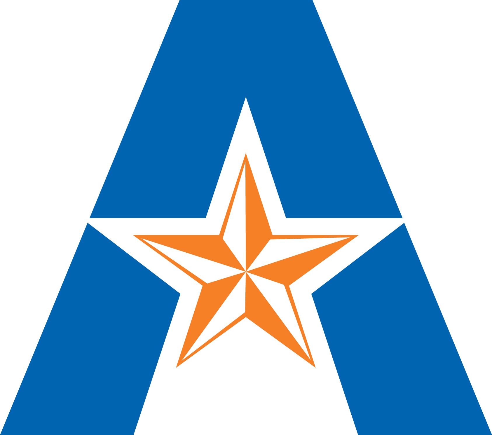
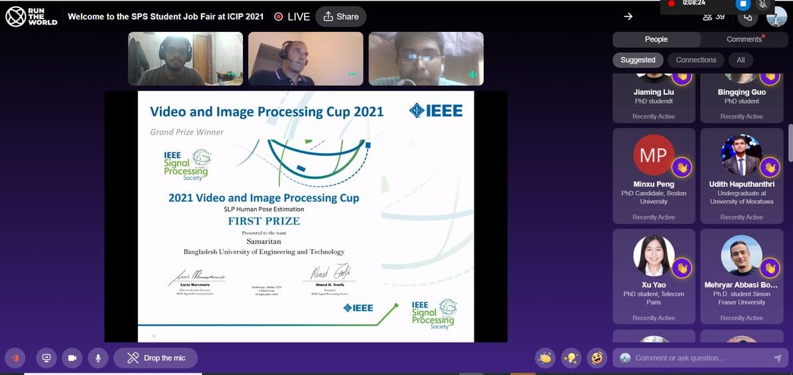
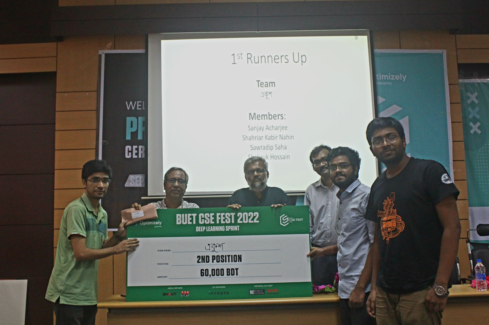
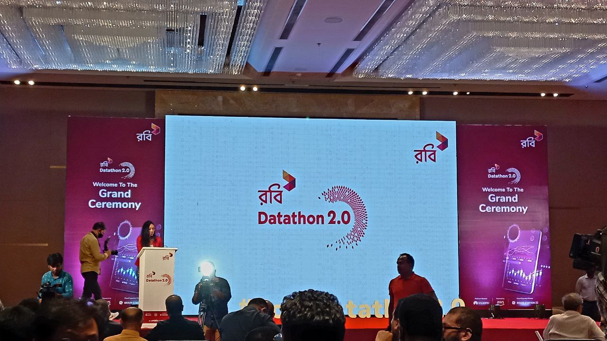

Achievements

Graduate Dean’s STEM Research Assistantship
May 2024
Awarded a competitive, fully-funded research assistantship in recognition of academic and research potential.
The University of Texas at Arlington

Champion, IEEE Video and Image Processing Cup 2021
September 2021
Won the 2021 VIP Cup by developing a novel computer vision solution for in-bed pose estimation. Our success was featured on the university website.
Organizer: IEEE Signal Processing Society

1st Runner-up, Bengali ASR Competition
September 2022
Secured second place in the first-ever Bengali Automatic Speech Recognition competition, DL Sprint, advancing AI for the 5th most spoken language.
Organizer: BUET CSE Dept. & Bengali.AI

Finalist, Robi Datathon 2.0
June 2022
Ranked among the top 10 finalists out of 358 teams in Bangladesh's largest data science competition, solving real-world business problems with predictive modeling.
Organizer: Robi Axiata Limited